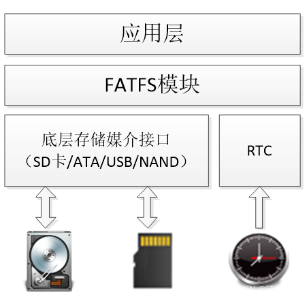
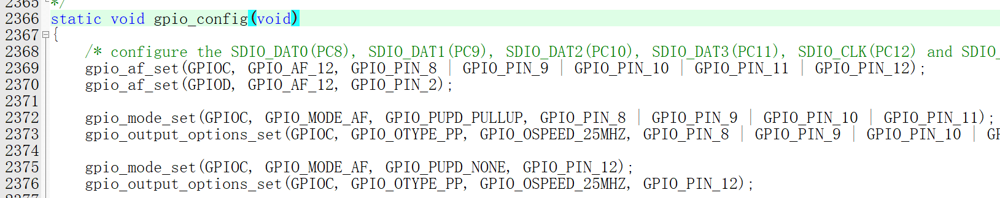
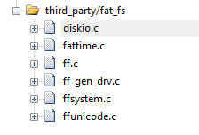
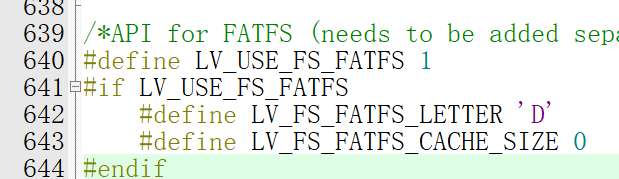

<!DOCTYPE lake>
<p data-lake-id="u37b31e7f" id="u37b31e7f" style="text-align: center"><br/></p><p data-lake-id="u77ede911" id="u77ede911" style="text-align: center"></p><h2 data-lake-id="b818b5a3" id="b818b5a3"><span data-lake-id="ud1789de1" id="ud1789de1">FAT_FS 文件系统</span></h2><p data-lake-id="u17ec099a" id="u17ec099a"><br/></p><p data-lake-id="u2da54978" id="u2da54978"><span data-lake-id="u9e8c67fc" id="u9e8c67fc">FAT (File Allocation Table) 文件系统是一种广泛使用的基于磁盘的文件系统,尤其适用于小型嵌入式系统和存储卡。FAT_FS 就是一个专门针对 FAT 文件系统的开源实现。</span></p><p data-lake-id="u1f11d3d4" id="u1f11d3d4"><br/></p><h3 data-lake-id="6f124206" id="6f124206"><span data-lake-id="u50fd1889" id="u50fd1889">FAT_FS 的主要特点</span></h3><p data-lake-id="ub723ec21" id="ub723ec21"><br/></p><ol list="ub9cdd069"><li data-lake-id="uf610f5e6" fid="uf2a4bce3" id="uf610f5e6"><span data-lake-id="u45f93816" id="u45f93816"> </span><strong><span data-lake-id="ud736f805" id="ud736f805">轻量级和高度可移植</span></strong><span data-lake-id="u1b8130f5" id="u1b8130f5">: </span></li></ol><ul data-lake-indent="1" list="uc859d2af"><li data-lake-id="u32937074" fid="uc46ca91b" id="u32937074"><span data-lake-id="u93c6ec45" id="u93c6ec45">FAT_FS 是一个非常轻量级的文件系统实现,占用资源少,非常适合嵌入式系统。</span></li><li data-lake-id="u4b7d84bc" fid="uc46ca91b" id="u4b7d84bc"><span data-lake-id="u5e243043" id="u5e243043">它被设计为可以在不同的硬件平台和操作系统上运行,具有很强的可移植性。</span></li></ul><ol list="udbc188f3" start="2"><li data-lake-id="u9911c8da" fid="uc2534545" id="u9911c8da"><span data-lake-id="ubadd6f56" id="ubadd6f56"> </span><strong><span data-lake-id="uf9d9cf08" id="uf9d9cf08">支持 FAT12/16/32 文件系统</span></strong><span data-lake-id="u4fcddb05" id="u4fcddb05">: </span></li></ol><ul data-lake-indent="1" list="ucc159b4e"><li data-lake-id="uedcb0cd9" fid="ub52fffa1" id="uedcb0cd9"><span data-lake-id="u2d4ee611" id="u2d4ee611">FAT_FS 支持 FAT12、FAT16 和 FAT32 三种常见的 FAT 文件系统格式。</span></li><li data-lake-id="u8de6470c" fid="ub52fffa1" id="u8de6470c"><span data-lake-id="u68882522" id="u68882522">可以方便地在这些文件系统格式之间进行切换和转换。</span></li></ul><ol list="u231f05e2" start="3"><li data-lake-id="u9472720b" fid="ubfa96835" id="u9472720b"><span data-lake-id="ua7b49290" id="ua7b49290"> </span><strong><span data-lake-id="u09966163" id="u09966163">功能丰富</span></strong><span data-lake-id="u215d44a8" id="u215d44a8">: </span></li></ol><ul data-lake-indent="1" list="ud6c0822b"><li data-lake-id="u1e576265" fid="u85d3fcf6" id="u1e576265"><span data-lake-id="uc11f0339" id="uc11f0339">FAT_FS 提供了完整的文件系统功能,包括文件和目录的创建、读写、删除等。</span></li><li data-lake-id="ud3b304d0" fid="u85d3fcf6" id="ud3b304d0"><span data-lake-id="ua9341e2f" id="ua9341e2f">还支持长文件名、时间戳、属性标志等特性。</span></li></ul><p data-lake-id="uc699ecba" id="uc699ecba"><br/></p><h3 data-lake-id="e5c40931" id="e5c40931"><span data-lake-id="u8a24d113" id="u8a24d113">FAT_FS 与 SDIO 的关系</span></h3><p data-lake-id="ua4937ba8" id="ua4937ba8"><br/></p><p data-lake-id="u94d541e7" id="u94d541e7"><span data-lake-id="ud6d4f1dc" id="ud6d4f1dc">SDIO (Secure Digital Input Output) 是一种通信协议,用于与 SD/SDHC/SDXC 存储卡进行数据交互。而 FAT_FS 则是一种文件系统,用于管理存储在这些存储卡上的文件数据。</span></p><p data-lake-id="u5ded8a12" id="u5ded8a12"><br/></p><p data-lake-id="u72c0353d" id="u72c0353d"><span data-lake-id="u741c1d51" id="u741c1d51">通常情况下,嵌入式系统会将 FAT_FS 文件系统与 SDIO 驱动程序集成在一起,形成一个完整的存储子系统。SDIO 驱动程序负责与物理存储卡进行底层的数据交互,而 FAT_FS 则提供上层的文件系统功能,使得应用程序可以方便地访问存储卡上的文件数据。</span></p><p data-lake-id="ub2c2efeb" id="ub2c2efeb"><br/></p><p data-lake-id="u36b41976" id="u36b41976"><span data-lake-id="u79f6d85d" id="u79f6d85d">这种组合使得嵌入式系统能够轻松地支持基于 SD 卡的文件存储和交换功能,广泛应用于各种电子设备中。</span></p><p data-lake-id="u6034afce" id="u6034afce"><span data-lake-id="u4bcab8e0" id="u4bcab8e0">​</span><br/></p><p data-lake-id="uafbe1b0e" id="uafbe1b0e"><span data-lake-id="u3dd726dc" id="u3dd726dc">fat_fs仓库地址：</span><a data-lake-id="u46c131e9" href="http://elm-chan.org/fsw/ff/00index_e.html" id="u46c131e9" rel="noopener noreferrer" target="_blank"><span data-lake-id="u828d31eb" id="u828d31eb">http://elm-chan.org/fsw/ff/00index_e.html</span></a></p><h2 data-lake-id="Ouw5m" data-lake-index-type="2" id="Ouw5m"><span data-lake-id="u7f0e9db8" id="u7f0e9db8">SDIO</span></h2><ol list="uc131c72d"><li data-lake-id="ubd6fbb0a" fid="u735e0953" id="ubd6fbb0a"><span data-lake-id="u906820e6" id="u906820e6">从GD32固件库的SDIO文件夹中复制</span><strong><span data-lake-id="udf30eb04" id="udf30eb04">sdcard.h</span></strong><span data-lake-id="uc170513c" id="uc170513c">和</span><strong><span data-lake-id="ub8c5566c" id="ub8c5566c">sdcard.c</span></strong><span data-lake-id="u848ddded" id="u848ddded">文件到自己的工程中</span></li><li data-lake-id="ue726f65b" fid="u735e0953" id="ue726f65b"><span data-lake-id="u11c37333" id="u11c37333">核对2366行代码中，引脚是否与自己的开发板相符合，若不相符，则修改引脚</span></li></ol><p data-lake-id="u7fdce465" id="u7fdce465"></p><p data-lake-id="u3ae339f9" id="u3ae339f9"><br/></p><ol list="uc131c72d" start="3"><li data-lake-id="u584b24ef" fid="u735e0953" id="u584b24ef"><span data-lake-id="uf8d8fcae" id="uf8d8fcae">在sdcard.c文件中，声明变量</span></li></ol><span class="yuque-card-unsupported">[codeblock]</span><ol list="uc131c72d" start="4"><li data-lake-id="u6b0b7d84" fid="u735e0953" id="u6b0b7d84"><span data-lake-id="uc9e0eb84" id="uc9e0eb84">在sd_init函数中，增加获取sd卡信息的函数，方便后续调用</span></li></ol><span class="yuque-card-unsupported">[codeblock]</span><h2 data-lake-id="hNoyd" data-lake-index-type="2" id="hNoyd"><span data-lake-id="udd85e497" id="udd85e497">fat_fs</span></h2><p data-lake-id="u6b753d76" id="u6b753d76"><span data-lake-id="uc24aa595" id="uc24aa595">将下载的文件导入到工程中</span></p><p data-lake-id="ub738f77e" id="ub738f77e" style="text-align: center"></p><p data-lake-id="u4283eb9d" id="u4283eb9d"><span data-lake-id="u16a19d20" id="u16a19d20">替换diskio.c文件内容</span></p><p data-lake-id="u9295e37a" id="u9295e37a"><a class="yuque-card-link" href="../../_assets/355430eb3acbc7a3082d0ff0.c">diskio.c</a></p><p data-lake-id="u2d97ccae" id="u2d97ccae"><br/></p><h3 data-lake-id="fVokl" data-lake-index-type="2" id="fVokl"><span data-lake-id="ub9b0c2ef" id="ub9b0c2ef">测试代码</span></h3><p data-lake-id="u58b2906a" id="u58b2906a"><br/></p><span class="yuque-card-unsupported">[codeblock]</span><p data-lake-id="uec77b8ba" id="uec77b8ba"><br/></p><h3 data-lake-id="oeHr0" data-lake-index-type="2" id="oeHr0"><span data-lake-id="u9412cf93" id="u9412cf93">error:13</span></h3><span class="yuque-card-unsupported">[codeblock]</span><p data-lake-id="u1ba37338" id="u1ba37338"><span data-lake-id="u40a118df" id="u40a118df">调用以上代码，如果出现13错误码，则使用SDFormatter对SD卡进行格式化即可</span></p><p data-lake-id="ud3c71d23" id="ud3c71d23"><span data-lake-id="ubb6c7bfd" id="ubb6c7bfd">​</span><br/></p><h2 data-lake-id="WRKwQ" data-lake-index-type="2" id="WRKwQ"><span data-lake-id="u799f40a7" id="u799f40a7">lvgl中启用文件系统</span></h2><p data-lake-id="u7ddbbb57" id="u7ddbbb57" style="text-align: center"></p><h3 data-lake-id="PDT1O" data-lake-index-type="2" id="PDT1O"><span data-lake-id="ue1678e94" id="ue1678e94">模拟器中</span></h3><p data-lake-id="u22819045" id="u22819045"><span data-lake-id="ufbb65f84" id="ufbb65f84">在lv_conf配置文件中，启用文件系统</span></p><span class="yuque-card-unsupported">[codeblock]</span><p data-lake-id="ua70e6a68" id="ua70e6a68"><span data-lake-id="u375b906c" id="u375b906c">其中“D:/videos/code/lv_port_pc_eclipse-release-v8.3/images”表示windows上面的路径，我们将它映射为lvgl中的文件盘符为</span><strong><span data-lake-id="u1c985080" id="u1c985080">D</span></strong></p><p data-lake-id="u4d4fbb65" id="u4d4fbb65"><span data-lake-id="ud2f065f5" id="ud2f065f5">例如，我们想访问“D:/videos/code/lv_port_pc_eclipse-release-v8.3/images”下的aaa.txt文件，在代码中我们其实只需要写"D:/aaa.txt"即可</span></p><p data-lake-id="u4e9370a0" id="u4e9370a0"><span data-lake-id="u86d7b164" id="u86d7b164">在代码中调用</span></p><span class="yuque-card-unsupported">[codeblock]</span><p data-lake-id="u5595addc" id="u5595addc"><span data-lake-id="u07935f6e" id="u07935f6e">运行上述代码，我们可以看到视频画面</span></p><p data-lake-id="ucc2b253b" id="ucc2b253b" style="text-align: center"></p><p data-lake-id="u16adef34" id="u16adef34" style="text-align: center"><br/></p><h3 data-lake-id="xJj36" data-lake-index-type="2" id="xJj36"><span data-lake-id="u15e900e7" id="u15e900e7">单片机中</span></h3><p data-lake-id="u7a7b83d1" id="u7a7b83d1"><br/></p><p data-lake-id="u8ac807da" id="u8ac807da" style="text-align: center"></p><p data-lake-id="u719e9f27" id="u719e9f27"><br/></p><p data-lake-id="u4846e81c" id="u4846e81c"><span data-lake-id="u23579c0b" id="u23579c0b">在lv_conf文件中配置</span></p><p data-lake-id="u50faf494" id="u50faf494"></p><p data-lake-id="u8cbc3abf" id="u8cbc3abf"><br/></p><p data-lake-id="u445b3cde" id="u445b3cde"><span data-lake-id="u35cb6425" id="u35cb6425">在代码中,初始化SD卡</span></p><span class="yuque-card-unsupported">[codeblock]</span><p data-lake-id="u9fcf73bb" id="u9fcf73bb"><span data-lake-id="u86884368" id="u86884368">初始化lvgl中的文件系统</span></p><span class="yuque-card-unsupported">[codeblock]</span><p data-lake-id="ubec6cf2d" id="ubec6cf2d"><span data-lake-id="ub812ba8d" id="ub812ba8d">参考示例代码</span></p><span class="yuque-card-unsupported">[codeblock]</span><p data-lake-id="u7403e538" id="u7403e538"><span data-lake-id="uf0bfc2fa" id="uf0bfc2fa">注: 上面代码需要在sd根目录新建images文件夹,并在其中放入a0001.bin文件</span></p><p data-lake-id="u47baafdb" id="u47baafdb"><span data-lake-id="uabeb39aa" id="uabeb39aa">​</span><br/></p><h2 data-lake-id="jEkG6" data-lake-index-type="2" id="jEkG6"><span data-lake-id="uf76a921a" id="uf76a921a">参考源码</span></h2><p data-lake-id="u2451244c" id="u2451244c"><br/></p><a class="yuque-card-link" href="https://www.yuque.com/attachments/yuque/0/2024/7z/27903758/1718686236565-a05ad874-49c6-406f-93a1-8391b5633765.7z">localdoc：GD32_FATFS.7z</a>